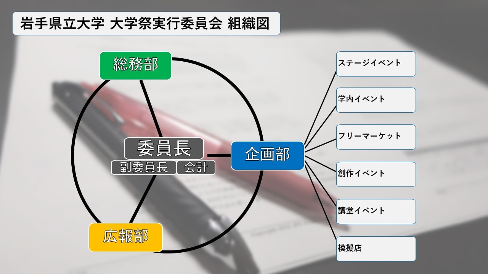

岩手県立大学 大学祭は今年度で21回目を迎える岩手県立大学滝沢キャンパスで開催される大学祭です。 アーティストやサークルによるパフォーマンスやステージ新企画・講堂でのイベント、数多くの模擬店など、楽しい企画をご用意しています。 講義室では、サークルの展示や、大学祭実行委員会による様々な企画も開催されます。体育棟では、体育館一面を使って、約80団体の出店者によるフリーマーケットも開催されます。 大学祭と同時に、オープンキャンパスも開催され、各学部棟では、研究公開などが行われます。また、今年度は岩手県立大学が創始されてから20周年ということで、特別な企画を行う予定です。 岩手県立大学 大学祭の歴史は浅いですが、学生だけでなく近隣にお住まいの方々、 子どもからお年寄りまで楽しめる地域に開かれた大学祭となっています。
岩手県立大学 大学祭について
今年度テーマ
今年度の岩手県立大学 大学祭テーマは、「Re:start」です！！
このテーマには、新たなスタートを大学祭実行委員のみならず、来場者の方々にも切っていただこうという思いが込められています。
委員長 挨拶
この度はＨＰへのアクセス誠にありがとうございます。
こちらのＨＰおよびTwitterの公式アカウントでは、随時大学祭の情報を発信してまいりますので時折ご覧ください。 また、運営ブログの方では日々の活動について書いていますので、そちらも合わせてご覧ください。
さて、今年度の大学祭のテーマは「Re:start」です。 今年度は、大学祭の名称の変更及び岩手県立大学が開学20周年の節目を迎える年であるため、これまでの伝統を引き継ぎつつ、さらに良い大学祭を作っていこうという思いがこのテーマに込められています。それらに加え、来場者の方々に楽しんでいただき、さらに良い「start」を切れる活力を蓄えていただくという意味も込められています。
岩手県立大学滝沢キャンパスの豊かな自然の中で学んでいる、元気あふれる学生の様々な一面をどうぞご覧ください。 そして、皆様と一緒に大学祭を盛り上げていけたら幸いです。
最後になりましたが、岩手県立大学 大学祭は大学祭実行委員会だけでなく、大学関係者の皆様、地域の方々、多くの企業様によって支えられ、開催できていますことを、 この場を借りて厚く御礼を申し上げます。
第21回 岩手県立大学 大学祭実行委員会 委員長 濱田 耕大
”ふぅくん”とは？
ふぅくんというのは、岩手県立大学 大学祭の公式マスコットキャラクターです。 3本の角は、岩手県立大学のロゴをモチーフにしたものであり、 大学のテーマカラーである青をベースとしています。 大学祭当日には、構内の至る所でふぅくんの姿を見かけることができます。
今年はどんな姿のふぅくんを見ることができるのでしょうか？ ぜひ大学祭に足を運んでみてくださいね。
大学祭実行委員会について
大学祭当日はスタッフパーカーを着ています。
なにかお困りのことがありましたら気兼ねなくスタッフへお申し付けください。

実行委員数 2年生18名 (2018年4月4日 現在)